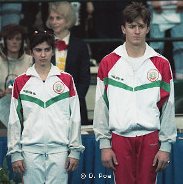

Dimitar Taskov (BUL)
1986 Jr. European PB Champion 
1991 European Cup PH Champion
Taskov and teammate Diliana Vodenicharova at the 1989 American Cup.
Dimitar was born on June 9, 1967.
Competition Results
1981
Jr. GDR-BUL Dual Meet: 4th AA
1983
Jr. GDR-BUL Dual Meet: 2nd Team, 4th AA, 1st PB
1985
Cottbus International: 16th AA, 3rd PH, 7th PB
Jr. Friendship Tournament (Druzhba): 3rd Team, 11th AA, 1st PH, 1st PB
1986
French International: 1st PH, 2nd PB
Jr. European Championships: 9th AA, 1st PB, 3rd PH
1987
Athens International: 2nd AA, 1st V, 1st PB, 2nd PH, 3rd HB
Cottbus International: 8th AA, 2nd PH
European Championships: 12th AA, 4th HB
Moscow News: 5th AA, 2nd V, 3rd PH
1988
Belgian Gym Masters: 2nd AA, 1st PH, 1st V, 2nd PB, 3rd FX
BUL Club Championships: 2nd AA
European Cup: 5th AA, 2nd V, 5th PB
Olympic Games: 5th Team, 20th AA
1989
American Cup: 4th AA
Chunichi Cup: 18th AA
Intl. Mixed Pairs: 13th Team
Tokyo Cup: 5th V, 7th PH
World Championships: 8th Team, 32nd AA, 7th PH
1990
European Championships: 16th AA, 6th PB, 7th PH
French International: 7th AA
Gander Memorial: 10th AA
Medico Cup: 4th AA
1991
European Cup: 4th AA, 1st PH
Kosice International: 6th AA, 1st PH
Rome Grand Prix: 5th AA
Sofia International: 1st AA
World Championships: 10th Team, 26th AA
This page was created on November
05, 2005 and was last updated on November 13, 2011.
© Gymn Forum